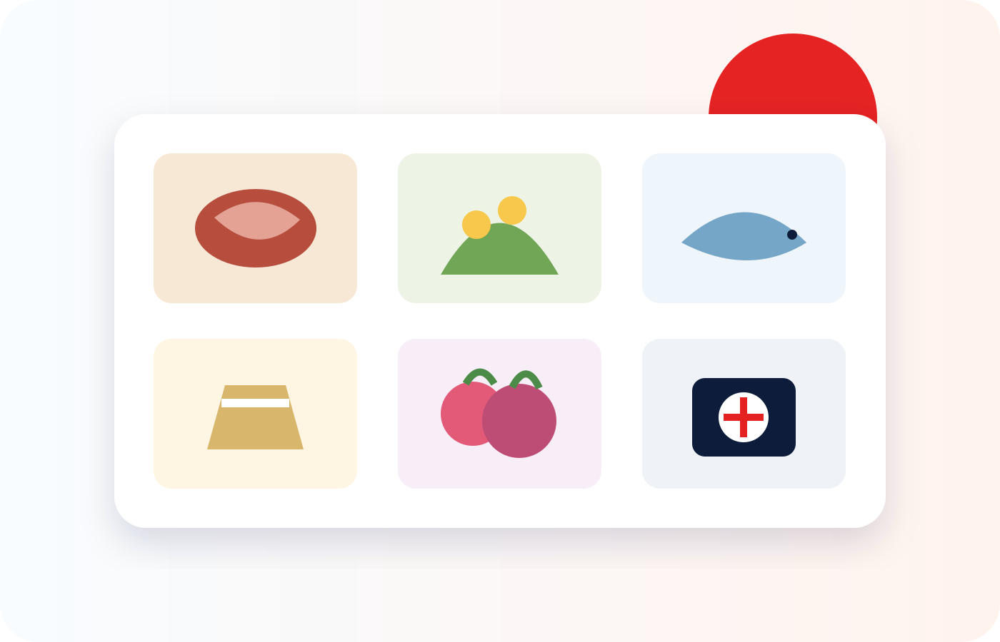

Impostos
Melhores presentes do Furusato Nozei
O melhor presente não é necessariamente o mais caro: é aquele que você realmente usa, consegue receber e sabe armazenar.

Resposta rápida
Para a maioria das famílias, os presentes mais fáceis de aproveitar são alimentos consumidos com frequência e itens do dia a dia. Carne, arroz, frutos do mar e frutas podem ser ótimos, mas vale conferir quantidade, forma de conservação, sazonalidade e prazo antes de escolher.
Não escolha só pelo ranking do momento — rankings mudam, a logística da sua casa não.
Categorias que costumam fazer sentido
A utilidade real depende da sua casa, da sua alimentação e do espaço disponível.
🥩 Carne
Wagyu, porções variadas, cortes e forma de conservação.
🍚 Arroz
Consumo recorrente, peso total, safra e espaço de armazenamento.
🦀 Frutos do mar
Congelado ou refrigerado, porcionado, origem e prazo de entrega.
🍈 Frutas
Sazonalidade, data estimada de envio e risco de a entrega não chegar no prazo.
🧻 Itens do dia a dia
Papel, detergente, toalhas e produtos que você realmente usaria.
🎫 Experiências
Hospedagem, refeições e atividades — confira regras de reserva e validade.
Como comparar dois presentes
| Critério | O que conferir | Por que importa |
|---|---|---|
| Quantidade líquida | Peso total e número de pacotes | Uma foto grande pode esconder porções pequenas |
| Forma de entrega | Congelado, refrigerado ou temperatura ambiente | Afeta espaço no freezer e qualidade na chegada |
| Data de envio | Imediata, mês escolhido ou safra futura | Evita várias caixas chegando juntas |
| Validade | Prazo após recebimento e após abrir | Reduz desperdício |
| Restrições | Área de entrega, mudança de endereço, cancelamento | Alguns itens não permitem flexibilidade |
| Uso real | Você compraria isso normalmente? | Valor percebido não é economia automática |
Escolha em quatro passos
- 1
Defina o orçamento
Use primeiro o seu limite calculado e deixe uma margem de segurança.
- 2
Liste o que consome
Priorize itens que já fazem parte da rotina da sua casa.
- 3
Espalhe as entregas
Evite ocupar o freezer inteiro ou receber frutas durante uma viagem.
- 4
Leia a página inteira
Confira variação, origem, peso, prazo e regras do município antes de doar.
Ranking não significa melhor para você
Rankings mudam com frequência e refletem popularidade, não a necessidade da sua casa. Uma caixa de grande volume pode ser ruim para quem mora sozinho ou tem pouco espaço no freezer.
Escolha pelo uso real e pela logística da sua casa, não só pela posição no ranking.
Erros comuns
Pedir tudo congelado
Várias entregas próximas podem ultrapassar o espaço disponível no freezer.
Ignorar a data de envio
Frutas e produtos sazonais podem chegar meses depois da doação.
Confundir preço com valor
O valor comercial estimado não significa economia para quem não usaria o produto.
Esquecer o limite fiscal
Nenhum presente compensa uma doação acima do seu limite.
Perguntas frequentes
Qual presente tem melhor custo-benefício?
Eletrônicos valem a pena?
Posso escolher o mês da entrega?
O presente pode ser diferente da foto?
Agora escolha onde procurar
Compare as plataformas e siga os guias específicos da Amazon e do Rakuten.
Esta página não indica produtos específicos: rankings, disponibilidade e prazos de entrega mudam com frequência. O objetivo aqui é ajudar você a comparar por conta própria.